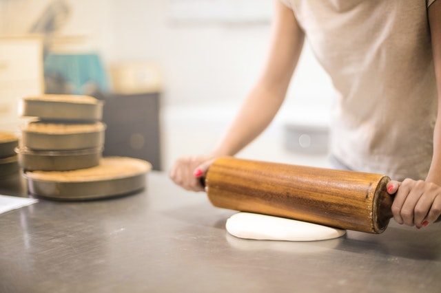
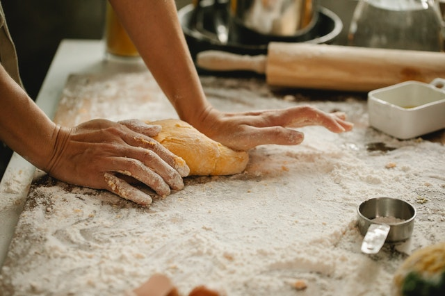
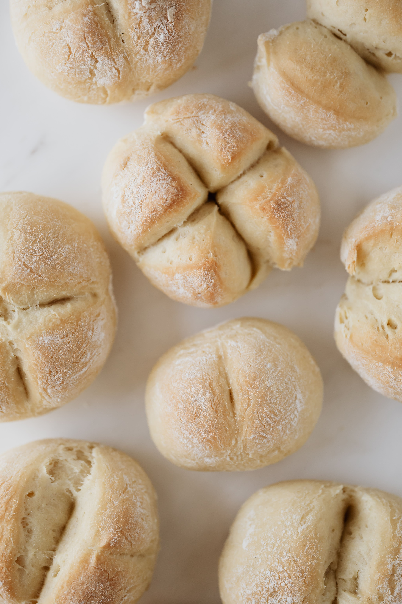
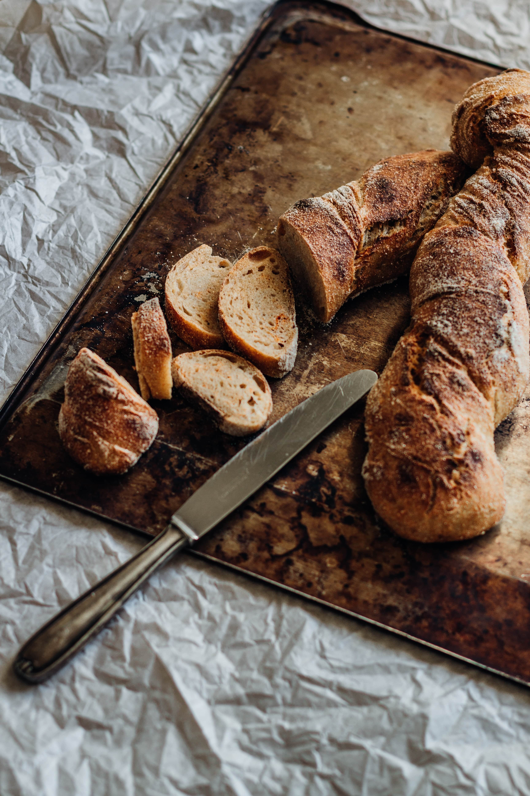

1. Hacer la masa
En un recipiente grande, vertemos la harina, la sal y el azúcar.
Mezclamos con un tenedor hasta que todo esté integrado. Después vierte el agua tibia, remueve y
por último añade la levadura.

2. Hora de amasar
Pon un poco de aceite de oliva en las manos y comienza a amasar la
mezcla. Al principio te puede resultar difícil que los ingredientes se unan, pero verás como
poco a poco la masa cada vez será más homogénea y pegajosa, es entonces cuando debes aplicar más
fuerza. Cuando notes que la masa esté más integrada, puedes seguir amasando sobre una tabla, así
será más cómodo. dejar repósar la masa por 5 minutos.

3. Fermentación
Pon la masa en un molde para el horno con un poco de aceite en la base o
una hoja de papel vegetal. Dale forma a la masa para tener una especie de bola y haz algunos
cortes con un cuchillo afilado, eso ayudará a la levadura a actuar y que la masa crezca.
Mete el molde dentro del horno apagado y déjalo reposar durante 3 horas, notarás como ha
aumentado su tamaño y la fermentación habrá sido efectiva.

4. Horneado
Ahora toca cocinarlo, pero antes pondremos 2 o 3 cucharadas de aceite
sobre la masa, extendiéndolo con un pincel para que quede uniforme.
Precalienta el horno a 175ºC y pon el pan junto con un tarro pequeño con agua. El líquido, al
calentarse se evaporará y creará un espacio húmedo que ayudará a la cocción del pan, para que
quede blando y esponjoso.
Hornea durante 25 o 30 minutos, hasta conseguir el aspecto que más te guste.